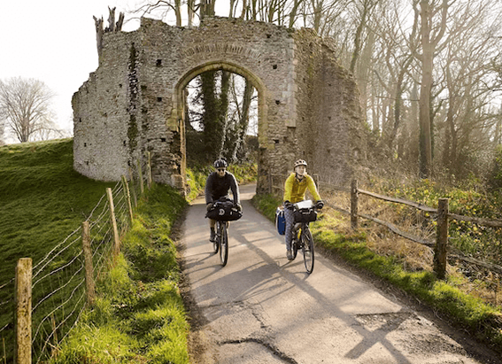

NATIONAL GEOGRAPHIC
They robbed graves and got away with it until some turned to murder
HISTORY & CULTURE
When a poor person’s body was laid to rest in Britain during the 18th and 19th centuries, there was a good chance it had no rest at all. Rather than settling into an eternal sleep beneath the earth, their bodies were dug up and carried away to the operating theaters of medical schools and colleges. There they were dissected by surgical students learning anatomy and practicing operations they would later perform on living patients.
Digging up the dead could ruin a reputation, but there were trades people who specialized in providing cadavers for doctors in training. They went by many names: body snatchers, grave robbers, resurrectionists. Although their efforts may have advanced the understanding of the human body, their work largely targeted the indigent, whose mortal remains were violated when the market demanded it.
Changing times
While industrialization transformed the burgeoning populations of Britain’s major cities, medical science was undergoing a metamorphosis of its own. In the 1790s there were some 300 medical students in Edinburgh and London, the centers of medical study in Britain. By the 1820s numbers had increased to over 400 in Edinburgh and nearly a thousand in London.
Students expected to dissect as many as three cadavers, which continually increased the demand for “fresh” bodies for anatomy classes. Parisian schools at the time had an effective system in place to ensure enough cadavers for each student. In 1828 enrollment in London schools dropped by 20 percent in favor of Parisian schools because of this guaranteed access.
In Britain, however, the only legally sanctioned method for acquiring a corpse was under the Murder Act of 1752. This allowed for the corpses of executed murderers to be used by surgeons for dissection. This rule only brought in an average of 10 to 12 corpses a year, well below the needed amount.
Traditionally, apprentice surgeons might go themselves to cemeteries to dig up corpses. If discovered, however, they faced reprisals from relatives and reputational loss. The solution was to find a middleman to provide corpses discreetly. Body snatchers or resurrectionists would trade in “stiff‘uns,” as they called them, for huge financial rewards.
For comparison, in 1829, when London’s Metropolitan Police Service was created, the starting weekly wage for constables was 21 shillings. A skilled weaver in the East End’s silk industry might earn as little as five shillings a week working 12 hours a day, six days a week. A disinterred body could bring in four to 12 guineas; a guinea was worth 21 shillings. Even if divided among a gang of four people, the typical arrangement, everyone still made out well.
Prices often depended on a corpse’s freshness, or whether it had interesting medical conditions. Unusual deformities, for example, could fetch top prices. A recently-deceased, well-developed limb could be worth more than a whole body on the verge of putrefaction. Male corpses were considered more valuable for the study of musculature. Selling hair and teeth could be profitable sidelines.
Comments :
- john Very good
- john Very good
Leave a Reply
Your email address will not be published. Required fields are marked*
Related posts:
-
 Try this new long-distance cycling trail for a different perspective on Wales
Try this new long-distance cycling trail for a different perspective on WalesDraped in heather, studded with boulders and capped by jutting peaks, the mountainous landscape feels unimaginably ancient. Already laced with pathways, this elemental region of North Wales can now be experienced
View article -
How to explore the Cantii Way, England's newest long-distance cycle route
Adding to their growing network of new cycling routes, charity Cycling UK’s latest trail winds for 145 miles around the Kent and East Sussex countryside, starting and ending in the village of Wye, close to Ashford.
View article -
 Ready to plan your fall hike Read this safety advice first.
Ready to plan your fall hike Read this safety advice first.Many hikers view autumn as a mild, benign period beyond the summer scorch and winter freeze. They often underrate the risks of venturing into forests, mountains, and deserts during this shoulder season, and fail
View article